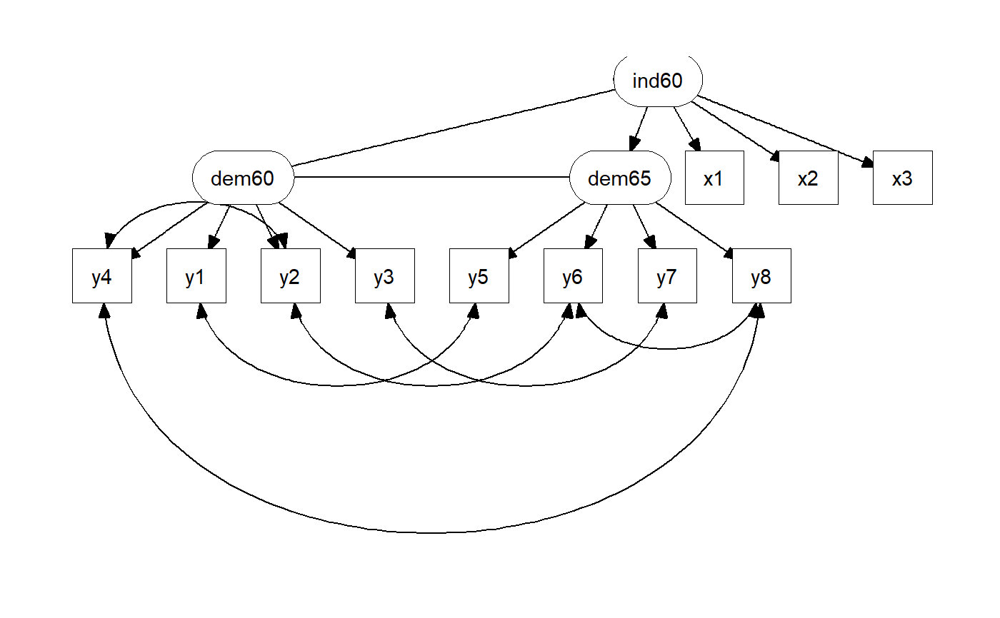

lavaan output to tbl_graphas_tbl_graph.lavaan.RdMethod for importing lavaan output to tbl_graph
as_tbl_graph.lavaan(object, standardize = TRUE, include_var = FALSE, ...)
| object | a lavaan object, returned from |
|---|---|
| standardize | should the edge coeffciants be standerdized. |
| include_var | should the variances be included? |
| ... | args passed to |
a tidygraph::tbl_graph() object that can further be processed with tidygraph, and plotted with ggraph.
library(lavaan)#>#>library(tidygraph)#> #>#> #> #>library(ggraph)#> Warning: package 'ggraph' was built under R version 3.6.2#>model <- ' # latent variables ind60 =~ x1 + x2 + x3 dem60 =~ y1 + y2 + y3 + y4 dem65 =~ y5 + y6 + y7 + y8 # regressions dem60 ~ ind60 dem65 ~ ind60 + dem60 # residual covariances y1 ~~ y5 y2 ~~ y4 + y6 y3 ~~ y7 y4 ~~ y8 y6 ~~ y8 ' fit <- sem(model, data = PoliticalDemocracy) graph_data <- as_tbl_graph(fit, standardize = TRUE) # m <- node_layout_maker(graph_data) m <- "tree" arrow_cap <- circle(5, 'mm') label_dodge <- unit(2.5, 'mm') label.padding <- unit(0.7,"lines") ggraph(graph_data, layout = m) + # edges geom_edge_link(aes(filter = relation_type == "regression"), arrow = arrow(20, unit(.3, "cm"), type = "closed"), start_cap = arrow_cap, end_cap = arrow_cap) + geom_edge_arc(aes(filter = relation_type == "covariance"), arrow = arrow(20, unit(.3, "cm"), type = "closed", ends = "both"), start_cap = arrow_cap, end_cap = arrow_cap) + # nodes geom_node_label(aes(filter = !latent, label = name), label.r = unit(0, "lines"), label.padding = label.padding) + geom_node_label(aes(filter = latent, label = name), label.r = unit(1.0, "lines"), label.padding = label.padding) + # Scales and themes theme_graph()